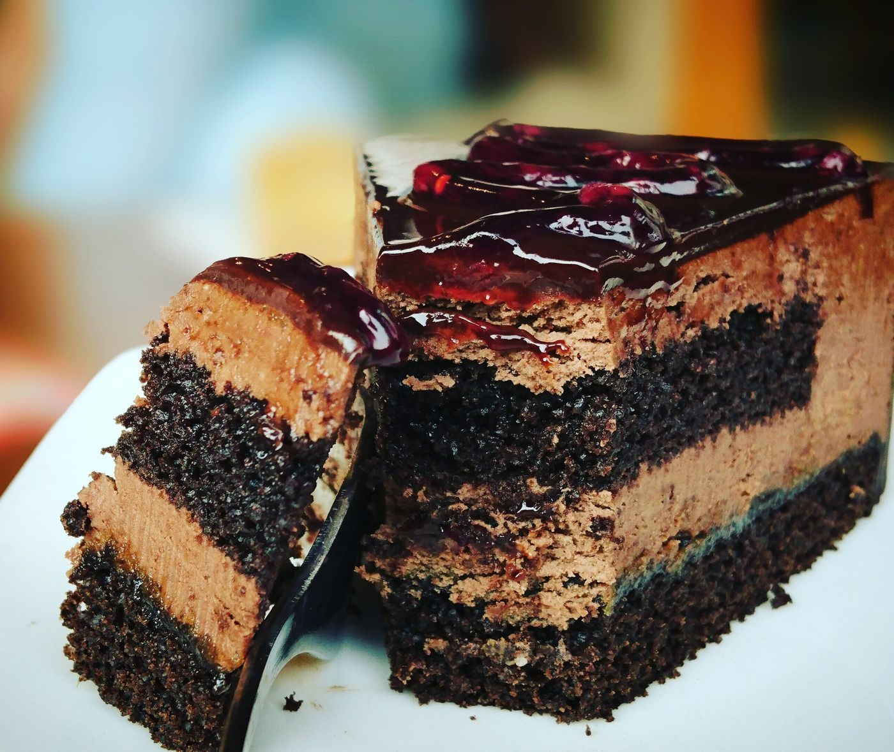

Brewery District, Columbus, Ohio
Kolache Republic is a Czech kolache bakery and cafe in the Brewery District of Columbus. Call to ask about sweet and savory kolaches made from scratch, cinnamon rolls, or Stauf’s coffee.
Kolache Republic is a Czech kolache bakery and cafe in the Brewery District of Columbus. Its kolaches are made from scratch and include sweet and savory varieties, with cinnamon rolls and Stauf’s coffee. The own site is a single page with no menu or prices, and bulk orders of a dozen or more go by email only, so call with questions.

702 S High St, Columbus, OH 43206
Sunday 9:00 AM to 1:00 PM; Wednesday to Friday 7:00 AM to 1:00 PM; Saturday 8:00 AM to 1:00 PM; closed Monday and Tuesday